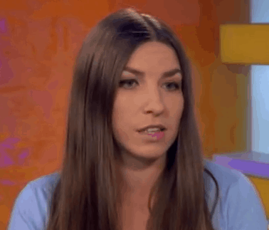

Общие сведения Образование Опыт работы Дополнительные сведения

Юлия Ку
г. Донецк
yuliya.ku
тел: 071-710-70-71
специализация: закупки, аналитика, оптимизация
(намеренное заполнение места)(заполнение места текстом)(заполнение места, чтоб картинка обтекалась)(заполнение места)(заполнение места)(заполнение места)(заполнение места текстом)(заполнение места, чтоб картинка обтекалась)(заполнение места)(заполнение места)(заполнение места текстом)(заполнение места, чтоб картинка обтекалась)(заполнение места)
Общие сведения Образование Опыт работы Дополнительные сведения
2002-2007 - Донецкий национальный технический университет (факультет экономики и менеджмента). Специальность "Менеджмент организаций"
2007-2009 - Донецкий национальный университет (факультут смежных и дополнительных профессий). Специальность "Журналист печатных СМИ"
Общие сведения Образование Опыт работы Дополнительные сведения
2007-2008 - Автосалон Nissan (г. Донецк)
Продавала, консультировала, показывала, оформляла, согласовывала, обслуживала, радовала, переставляла, контролировала, обновляла, передавала, приводила в порядок, реализовывала, тестировала опции в новых моделях, перегоняла автомобили между складом и автосалоном, отмечала, анализировала, открывала, закрывала, рекламировала акционные модели и рассказывала об условиях акции, спрашивала, отвечала, записывала, связывала и контактировала, дополняла
2008-2009 - Автосалон Peugeot (г. Донецк)
Встречала, продавала новые автомобили, консультировала, показывала, оформляла, согласовывала, обслуживала, переставляла, контролировала, обновляла информацию о ценах и характеристиках представленных в автосалоне моделях, передавала, приводила в порядок, реализовывала, тестировала, перегоняла, отмечала, анализировала продажи, открывала двери, закрывала шкафы, рекламировала, спрашивала, отвечала, проверяла работоспособность, записывала, связывала, дополняла
2009-2010 - Автосалон Kia (г. Донецк)
Встречала, продавала, советовала, сравнивала, консультировала по имеющемуся модельному ряду автомобилей и сравнивала модели с ближайшими конкурентами из того же ценового сегмента, показывала, оформляла, согласовывала, обслуживала, переставляла, контролировала, обновляла, передавала, приводила в порядок, просиживала, почитывала, реализовывала, тестировала, перегоняла, отмечала, анализировала, открывала, рекламировала, спрашивала, отвечала, записывала, изучала рынок новых автомобилей, презентовала, связывала, дополняла информацию на сайте, считала, обзванивала потенциальных покупателей, интересовалась впечатлениями от обслуживания в автосалоне
2010-2011 - Автосалон Mazda (г. Донецк)
Принимала, продавала, консультировала, отправляла по почте и курьером, показывала, считала, оформляла, согласовывала, обслуживала, переставляла, поднимала, опускала, контролировала, обновляла, подготавливала пакет документов для продажи автомобиля и передавала готовые документы о покупке автомобиля покупателям, приводила в порядок, реализовывала, тестировала, перегоняла, отмечала, анализировала, открывала, рекламировала, спрашивала, отвечала, записывала, связывала, дополняла
2011-2012 - Автосалон Honda (г. Донецк)
Встречала, советовала, презентовала, продавала, консультировала, показывала, скучала и серфила в интернете, оформляла, согласовывала, обслуживала, переставляла, контролировала, обновляла, передавала, приводила в порядок, реализовывала, тестировала автомобили вместе с покупателями, перегоняла автомобили в экпозиционном пространстве, отмечала, анализировала, открывала, рекламировала, спрашивала, отвечала, записывала, связывала, обзванивала, интервьютровала, дополняла, заносила, выгружала, отчитывалась, готовила статистику, демонстрировала аналитические данные, готовила квартальные и годовые отчеты
Общие сведения Образование Опыт работы Дополнительные сведения
не знаю 1С
умею делать рекламные картинки для VK
могу сверстать газету в Adobe InDesign
владею начальными знаниями несложных видео-редакторов
изучаю веб-дизайн